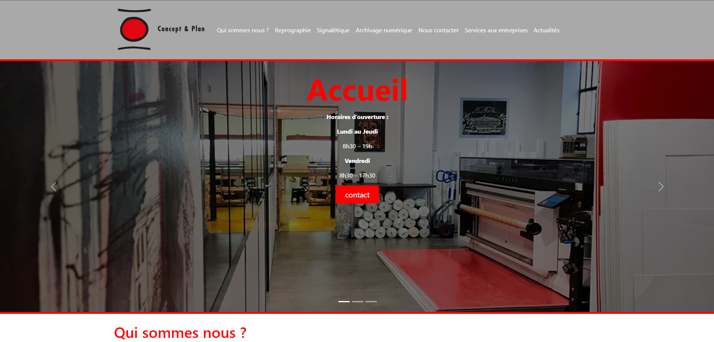
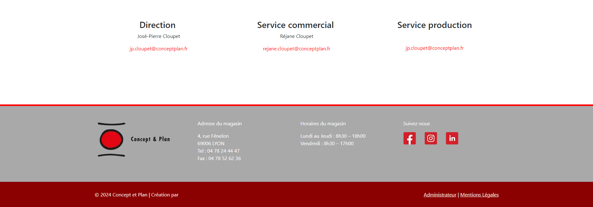
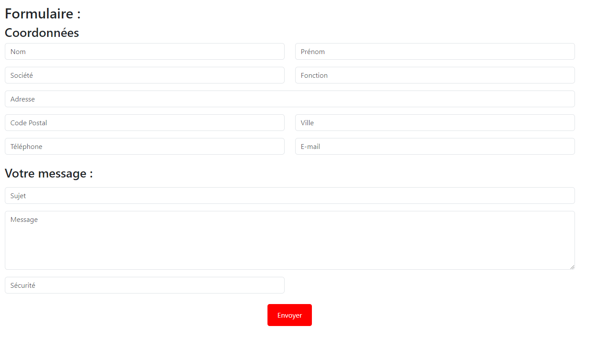
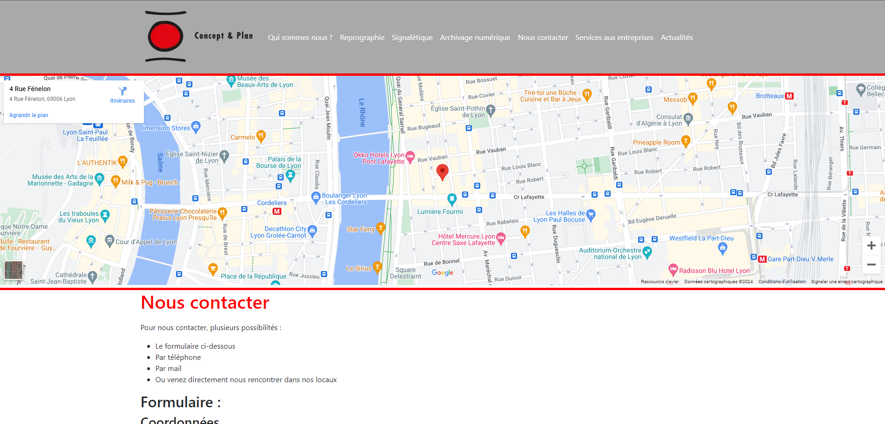

Mon Thème WordPress
Ce thème WordPress a été développé dans le cadre de ma formation. Il est conçu pour être responsive et personnalisable.
Installation
- Téléchargez le thème depuis la section ICI.
- Décompressez le fichier téléchargé.
- Téléversez le dossier du thème dans le répertoire
wp-content/themes de votre installation WordPress.
- Activez le thème via le tableau de bord WordPress.
Fonctionnalités
- Design responsive
- Options de personnalisation
- Support des widgets
Captures d'écran



